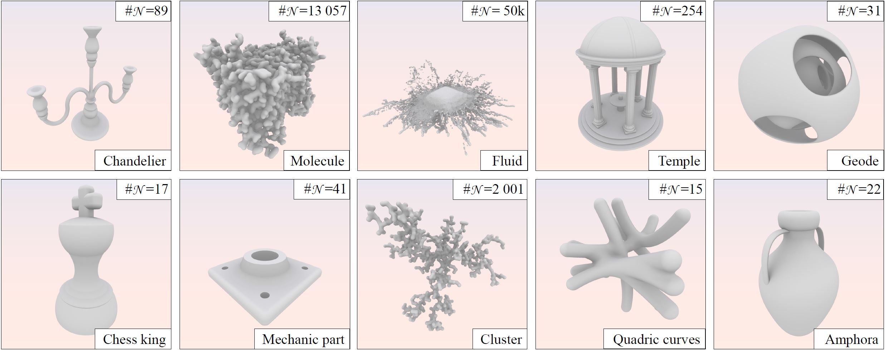

Axel Paris - Researcher in Computer Graphics
Home
Publications
Resume
Email
Twitter
Segment Tracing using Local Lipschitz Bounds
March 18, 2020. Last updated on April 16, 2022.

Preprint
PDF
Video
Code
Talk
Shadertoy
We introduce Segment Tracing, a new algorithm that accelerates the classical Sphere Tracing method for computing the inter-
section between a ray and an implicit surface. Our approach consists in computing the Lipschitz bound locally over a segment
to improve the marching step computation and accelerate the overall process. We describe the computation of the Lipschitz
bound for different operators and primitives. We demonstrate that our algorithm significantly reduces the number of field func-
tion queries compared to previous methods, without the need for additional accelerating data-structures. Our method can be
applied to a vast variety of implicit models ranging from hierarchical procedural objects built from complex primitives, to
simulation-generated implicit surfaces created from many particles.
The projet has been awarded the replicability stamp.
@article{Galin2020,
Title = {{Segment Tracing Using Local Lipschitz Bounds}},
Author = {Galin, Eric and Gu{\'e}rin, Eric and Paris, Axel and Peytavie, Adrien},
Journal = {{Computer Graphics Forum}},
Publisher = {{Wiley}},
Year = {2020},
Volume = {39},
Number = {2},
Pages = {545--554}
}